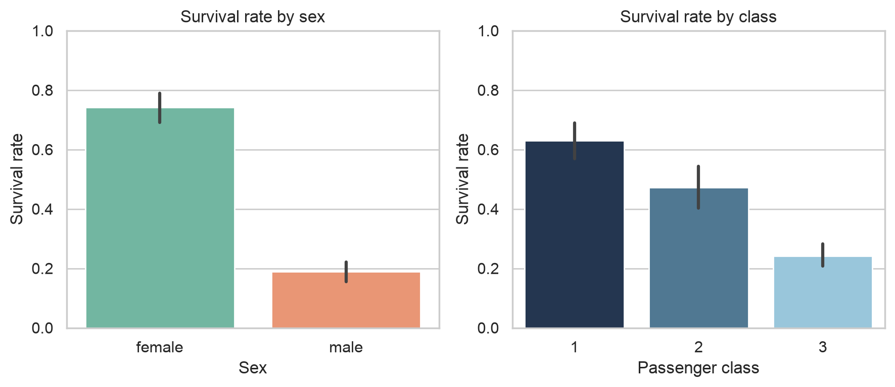
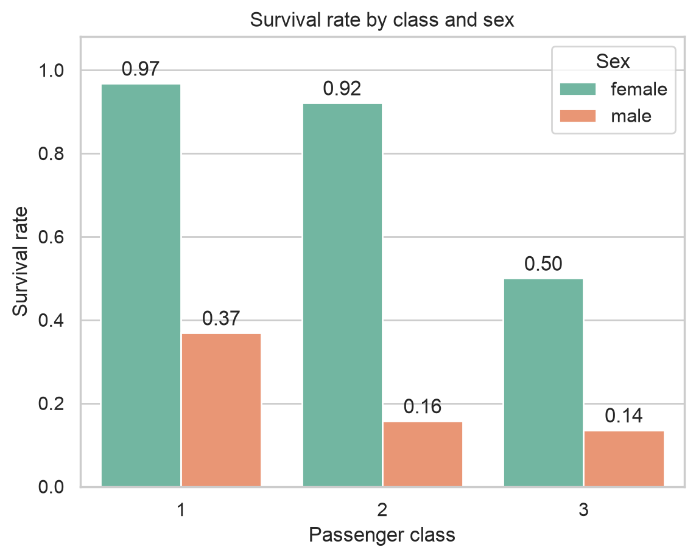
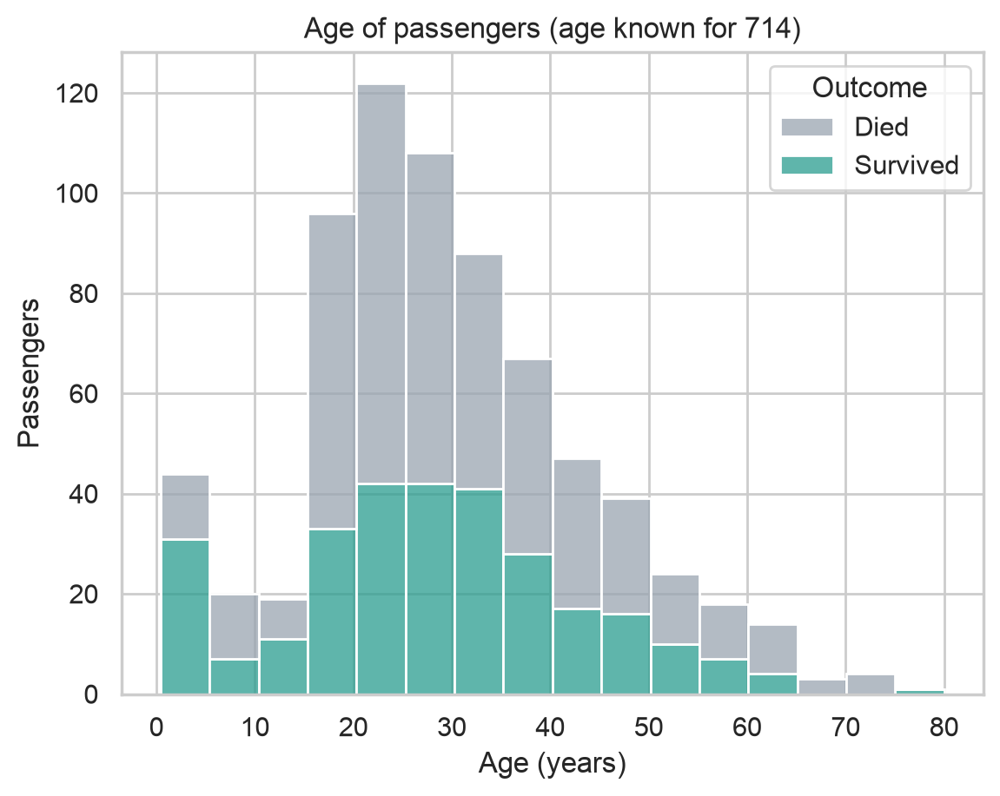
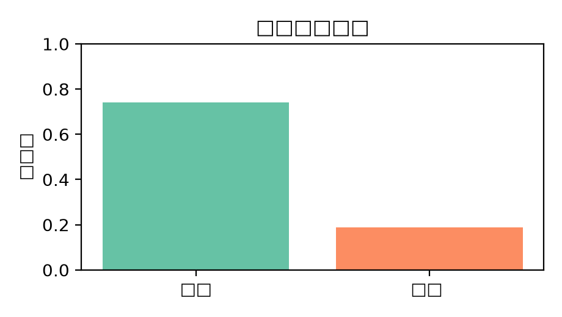
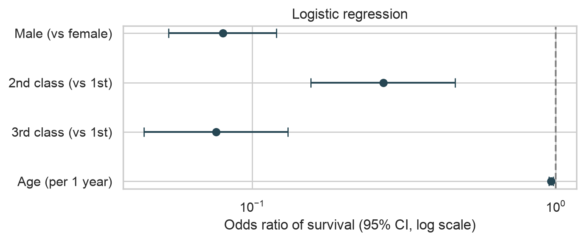

開始之前需要什麼、會做什麼、怎麼讀這一頁
這一章要完成的分析流程：
0-1這一頁的四種方塊
紫色框是要給 AI 的話。按「複製」貼到 AI 對話框。（灰底的括號）表示要換成你自己的內容。
# 灰框是 AI 寫出來、我們檢查過的程式碼，貼到 Colab 的程式碼儲存格執行0-2為什麼用 Python，不是 R？
Colab 預設的語言是 Python，AI 寫 Python 也最熟練。好消息是：你在 R 學過的觀念，Python 幾乎一一對應，只是寫法不同。看懂這張表，AI 寫的 Python 你就大致看得懂：
| 要做的事 | R（tidyverse） | Python（pandas / seaborn） |
|---|---|---|
| 載入套件 | library(tidyverse) | import pandas as pd |
| 讀 CSV | read_csv("x.csv") | pd.read_csv("x.csv") |
| 看前幾列 / 結構 | head(df)、glimpse(df) | df.head()、df.info() |
| 取一欄 | df$Age | df["Age"] |
| 新增欄位 | mutate(fam = SibSp + Parch + 1) | df["fam"] = df["SibSp"] + df["Parch"] + 1 |
| 分組統計 | group_by(Sex) |> summarise(rate = mean(Survived)) | df.groupby("Sex")["Survived"].mean() |
| 交叉表 | table(df$Sex, df$Survived) | pd.crosstab(df["Sex"], df["Survived"]) |
| 缺值 | NA、is.na() | NaN、.isna() |
| 畫圖 | ggplot(df, aes(x, y)) + geom_col() | sns.barplot(data=df, x=..., y=...) |
| 卡方檢定 / 秩和檢定 | chisq.test() / wilcox.test() | chi2_contingency() / mannwhitneyu() |
| logistic regression | glm(..., family = binomial) | smf.logit(...).fit() |
認識 Colab、開新筆記本雲端上的 Jupyter 筆記本
Google Colab（Colaboratory）是 Google 提供的免費線上筆記本：在瀏覽器裡寫程式、執行、看結果和圖，全部放在同一份文件裡。筆記本的檔名是 .ipynb，會自動存到你的 Google 雲端硬碟裡的「Colab Notebooks」資料夾。
1-1打開 Colab，新增筆記本
- 到 colab.research.google.com，右上角登入 Google 帳號。
- 會跳出「開啟筆記本」視窗，按左下角的 ＋ 新增筆記本。（如果沒跳出來：上方選單 檔案 → 新增筆記本。）
1-2認識畫面
- 1檔名：點一下就能改，例如改成
Titanic_AI.ipynb。 - 2＋ 程式碼 / ＋ 文字：新增程式碼儲存格，或寫筆記用的文字儲存格。
- 3程式碼儲存格：在灰框裡寫程式，按左邊的 ▶ 或 Shift + Enter 執行，結果出現在下面。
- 4左側工具列：☰ 目錄、{x} 變數、🔑 密鑰、📁 檔案（上傳資料用，第 3 步）。
- 5連線狀態：出現 ✓ 和 RAM / 磁碟，代表已經連上雲端電腦。
- 6執行階段選單：全部執行、重新啟動、變更執行階段類型（換成 R，見附錄）。
- 7Gemini：開啟 AI 對話面板（第 2 步）。
1-3執行第一格程式
在第一個程式碼儲存格輸入下面這行，按 ▶ 執行。第一次執行時，Colab 要先幫你分配一台雲端電腦（「連線中」），等幾秒鐘。
print("Hello, Titanic!")
| 快捷鍵 | 功能 |
|---|---|
| Shift + Enter | 執行這一格，並跳到下一格（最常用） |
| Ctrl / ⌘ + Enter | 執行這一格，停在原地 |
| Ctrl / ⌘ + M，再按 B | 在下面新增一格程式碼 |
| Ctrl / ⌘ + / | 把選取的程式加上或取消註解（#） |
NameError: name 'df' is not defined 時，用 執行階段 → 全部執行 從頭跑一次就好。在 Colab 裡使用 AI三個入口，加上一段開場 prompt
Colab 內建 Google 的 AI 助手 Gemini。有三個常用的入口：
2-1入口 A：在空白儲存格請 AI 產生程式碼
新增一格空白的程式碼儲存格，裡面會出現灰色的提示文字，點「使用 AI 產生」（或類似的連結），輸入你要做的事，按 Enter，AI 會把程式碼寫進這一格。
2-2入口 B：出錯時按「解釋錯誤」
程式執行出錯時，錯誤訊息下面通常會出現「解釋錯誤」按鈕。按下去，Gemini 會說明錯誤原因並建議修正方式。第 11 步有完整的例子。
2-3入口 C：Gemini 對話面板
按右上角（或工具列上）的 Gemini 按鈕，右邊會打開對話面板。可以像聊天一樣問問題、請它寫整段程式。它看得到你的筆記本，產生的程式可以直接加到筆記本裡。
✦ Gemini
df.groupby("Sex")["Survived"].mean()＋ 加到筆記本32-4入口 D：用其他 AI 聊天網站
如果你的帳號看不到 Gemini（例如學校帳號的管理員關閉了 AI 功能、或免費額度用完），可以另外開一個分頁使用 ChatGPT、Claude 或 Gemini 網頁版：把 prompt 貼過去，再把它寫的程式碼複製回 Colab。這一頁的每個 prompt 都適用。
2-5先給 AI 一段開場 prompt
在開始之前，先告訴 AI 你是誰、資料是什麼、要遵守什麼規則。之後每一步的 prompt 就可以比較短。（用 Gemini 面板或聊天網站時，在同一個對話裡繼續問；如果開了新對話，記得再貼一次。）
你是一位資料分析助教，熟悉 Python 的 pandas、seaborn、scipy 和 statsmodels。 我是醫技系的大學生，正在 Google Colab 上分析 Titanic 乘客資料（891 位乘客，欄位有 PassengerId、Survived、Pclass、Name、Sex、Age、SibSp、Parch、Ticket、Fare、Cabin、Embarked）。 接下來我會一步一步請你寫程式，請遵守： 1. 每次只做我要求的那一步，不要一次做完全部。 2. 程式碼加上繁體中文註解。 3. 圖上的文字一律用英文（Colab 預設沒有中文字型）。 4. 不要自己編造數字；結果以我執行後貼回給你的輸出為準。
| 這段 prompt 裡的 | 作用 |
|---|---|
| 你是一位資料分析助教…… | 角色：讓它用教學的口氣、選適合的套件 |
| 我是醫技系的大學生……欄位有…… | 背景：它看不到你的資料，欄位名稱一定要給，寫的程式才不會用錯欄名 |
| 每次只做我要求的那一步 | 限制：避免一次丟出一大段看不懂的程式 |
| 圖上的文字一律用英文 | Colab 預設沒有中文字型，中文會變成方塊（第 7 步有圖） |
| 不要自己編造數字 | 提醒它：數字以執行結果為準（AI 入門第 4 節的「幻覺」） |
下載資料認識 Titanic 資料集，四種取得方式
這份資料來自資料科學競賽網站 Kaggle 的入門題目「Titanic – Machine Learning from Disaster」的訓練資料（train.csv），整理自乘客名單等歷史紀錄。它有 891 位乘客，大約是全船人數的四成，不包含船員。我們在課程網站放了一份一模一樣的副本，方便直接下載。
3-1資料字典：每一欄是什麼？
| 欄位 | 意思 | 值 / 單位 | 備註 |
|---|---|---|---|
PassengerId | 乘客編號 | 1–891 | 只是編號，不拿來分析 |
Survived | 是否存活 | 0 = 罹難、1 = 存活 | 我們要研究的結果 |
Pclass | 艙等 | 1 = 頭等、2 = 二等、3 = 三等 | 常被當作社經地位的代表；是數字，但其實是類別 |
Name | 姓名 | 文字 | 含稱謂（Mr.、Mrs.、Miss.、Master.） |
Sex | 性別 | male / female | |
Age | 年齡 | 歲 | 未滿 1 歲用小數（例如 0.42）；有缺值 |
SibSp | 同船的兄弟姊妹 + 配偶人數 | 人 | sibling + spouse |
Parch | 同船的父母 + 子女人數 | 人 | parent + child |
Ticket | 船票號碼 | 文字 | 格式很亂，這次不用 |
Fare | 票價 | 英鎊 | 同一張票可能是全家合買 |
Cabin | 艙房號碼 | 文字 | 大部分是缺值 |
Embarked | 登船港口 | C = Cherbourg（法國）、Q = Queenstown（愛爾蘭）、S = Southampton（英國） | 有 2 個缺值 |
3-2四種取得資料的方式
| 方式 | 怎麼做 | 優點 / 缺點 |
|---|---|---|
| A. 直接用網址讀（這一章用這個） | 程式裡寫網址，pd.read_csv(網址) | 最簡單，重新連線也不怕；資料要放在公開網址 |
| B. 下載後上傳到 Colab | 先下載到電腦，再從左側 📁 上傳 | 任何檔案都可以；重新連線後檔案會消失，要再上傳 |
| C. 放在 Google 雲端硬碟 | 把檔案放進雲端硬碟，在 Colab 掛載 | 檔案不會消失；第一次要授權 |
| D. 從 Kaggle 下載 | 到 Kaggle 的 Titanic 競賽頁面下載 train.csv | 原始出處；要註冊帳號並同意競賽規則 |
方式 B：上傳檔案
- 按頁面最上方的 ⬇ titanic.csv，存到電腦。
- 在 Colab 左側按 📁（檔案），再按上傳圖示，選剛剛下載的
titanic.csv。會出現「重新連線後檔案會被刪除」的提醒，按確定。 - 檔案出現在清單裡之後，就能用
pd.read_csv("titanic.csv")讀取。
檔案
方式 C：掛載 Google 雲端硬碟
from google.colab import drive drive.mount("/content/drive") # 會跳出視窗請你授權 df = pd.read_csv("/content/drive/MyDrive/titanic.csv") # 依你放的位置修改路徑
讀進資料、認識欄位先看清楚資料長什麼樣子
把下面的 prompt 給 AI。AI 寫出來的程式應該跟下面差不多（變數名稱或註解可能不同，沒關係）。貼到 Colab 執行：
請寫 Python 程式：從下面的網址讀取 CSV，存到變數 df，印出它有幾列幾欄，再顯示前 5 列。 https://chenyc0901.github.io/R_datastructure_learning/data/titanic.csv
import pandas as pd # 表格資料 import matplotlib.pyplot as plt # 畫圖的底層 import seaborn as sns # 比較漂亮、好寫的統計圖 url = "https://chenyc0901.github.io/R_datastructure_learning/data/titanic.csv" df = pd.read_csv(url) # 讀 CSV，存成 DataFrame print(df.shape) # (列數, 欄數) df.head() # 前 5 列
(891, 12)：891 列（乘客）、12 欄，跟資料字典一樣。- 最左邊的 0、1、2……是 pandas 自動加的列索引，從 0 開始數，不是資料的一部分。
NaN是 Python 的缺值，等於 R 的NA。前 5 列就看到 Cabin 有缺值了。
請用 info() 和 describe() 檢查 df：每一欄的資料型態、非缺值的數量，以及數值欄位的摘要統計。 執行結果我貼在下面，請用白話說明每一欄代表什麼，以及你看到哪些需要注意的地方。 （貼上輸出）
df.info() # 每一欄的型態與非缺值數量
df.describe().round(2) # 數值欄位的摘要統計
- Non-Null Count 是「不是缺值」的數量：Age 714 → 缺 891 − 714 = 177 筆；Cabin 只有 204 → 缺 687 筆；Embarked 889 → 缺 2 筆。
- Survived 是 0/1，平均值 0.38 = 存活的比例。這是很實用的技巧：0/1 變數的平均就是比例。
Pclass的平均 2.31 沒有意義，因為它其實是類別（艙等）。describe()只是把所有數字欄都算一遍，不會判斷該不該算。- Age 最小 0.42（約 5 個月大的嬰兒）、最大 80，合理；Fare 最小 0，可能是工作人員或招待票，值得留意。
缺值與清理讓 AI 列選項，由你做決定
請算出 df 每一欄有幾個缺值、佔全部的百分比，整理成一張表。
na = df.isna().sum() # 每一欄的缺值數 pd.DataFrame({"n_missing": na, "percent": (na / len(df) * 100).round(1)}) # 佔全部的 %
缺值怎麼處理會影響結果，這是你要做的決定。先請 AI 列出選項，不要直接寫程式：
Cabin 缺 687 筆、Age 缺 177 筆、Embarked 缺 2 筆。 請先不要寫程式，列出每一欄可以怎麼處理（刪掉欄位、補值、保留缺值），以及各自的優缺點。
| 欄位 | 選項 | 優點 | 缺點 |
|---|---|---|---|
| Age（缺 19.9%） | 刪掉缺 Age 的列 | 簡單 | 少了 177 人；如果缺值不是隨機的，會造成偏差 |
| 用中位數（28 歲）補 | 保留所有人 | 202 個人都變成 28 歲，分布被扭曲，變異被低估（標準差從 14.5 變成 13.0） | |
| 依艙等、性別分組的中位數補 / 用模型預測 | 比較合理 | 比較複雜，補的值仍然是猜的 | |
| Cabin（缺 77.1%） | 刪掉這一欄 | 大部分都缺，很難用 | 失去艙房位置的資訊 |
| Embarked（缺 0.2%） | 用最常見的港口 S 補 | 只有 2 筆，影響極小 | — |
這次的決定：Age 保留缺值，需要年齡的分析就只用有年齡的 714 人，並在結論寫出這個限制；Cabin 和 Ticket 刪掉；Embarked 用 S 補。另外新增幾個之後會用到的欄位：
好，請照下面的決定寫程式，結果存成新的 DataFrame clean，不要改動 df： 1. 刪掉 Cabin 和 Ticket 兩欄。 2. Embarked 用出現最多次的值補。 3. Age 保留缺值，不要補。 4. 新增 FamilySize = SibSp + Parch + 1。 5. 新增 AgeGroup，把 Age 分成 0-12、13-18、19-40、41-60、61-80。 6. 新增 Outcome，把 Survived 的 0 / 1 換成 "Died" / "Survived"。 最後檢查 clean 每一欄還有幾個缺值。
clean = df.drop(columns=["Cabin", "Ticket"]) # drop 會回傳新的表，df 不會被改到 clean["Embarked"] = clean["Embarked"].fillna(clean["Embarked"].mode()[0]) # 補上最常見的港口 clean["FamilySize"] = clean["SibSp"] + clean["Parch"] + 1 # 兄弟姊妹配偶 + 父母子女 + 自己 clean["AgeGroup"] = pd.cut(clean["Age"], bins=[0, 12, 18, 40, 60, 80], # (0,12]、(12,18]…… labels=["0-12", "13-18", "19-40", "41-60", "61-80"]) clean["Outcome"] = clean["Survived"].map({0: "Died", 1: "Survived"}) # 0/1 換成文字，畫圖比較好讀 clean.isna().sum()
- Cabin、Ticket 不見了，Embarked 的缺值變成 0，新增的 FamilySize、AgeGroup、Outcome 都在。
- AgeGroup 缺 177 筆，跟 Age 一樣，表示每一個有年齡的人都分到組了（0.42 歲的嬰兒也落在 0-12）。
- 原本的
df沒被改到：執行df.shape應該還是(891, 12)。
df = df.dropna()。這會刪掉任何一欄有缺值的列，因為 Cabin 大部分都缺，891 人只剩 183 人，而且留下來的大多是有艙房紀錄的頭等艙乘客，結果會完全偏掉。所以清理一定要指定「哪一欄、怎麼處理」。探索：誰活下來了？分組算存活率
請用 clean 算出： 1. 整體存活率。 2. 依性別（Sex）、艙等（Pclass）各自分組的人數、存活人數與存活率。 3. 艙等 × 性別交叉的存活率表。 4. 依年齡組（AgeGroup）、家庭人數（FamilySize）分組的人數與存活率。 每一個結果分開放在不同的儲存格，存活率取到小數 3 位。
print("總人數：", len(clean)) print("存活率：", round(clean["Survived"].mean() * 100, 1), "%") # 0/1 的平均 = 1 的比例 clean["Outcome"].value_counts()
clean.groupby("Sex")["Survived"].agg(n="count", survived="sum", rate="mean").round(3)
clean.groupby("Pclass")["Survived"].agg(n="count", survived="sum", rate="mean").round(3)
pd.crosstab(clean["Pclass"], clean["Sex"], values=clean["Survived"], aggfunc="mean").round(3) # 每一格是存活率
clean.groupby("AgeGroup", observed=True)["Survived"].agg(n="count", rate="mean").round(3)
clean.groupby("FamilySize")["Survived"].agg(n="count", rate="mean").round(3)
- 549 + 342 = 891 ✓；女性 314 + 男性 577 = 891 ✓；三個艙等 216 + 184 + 491 = 891 ✓。
- 存活人數 233 + 109 = 342 ✓，跟整體的存活人數一樣。
- 年齡組的人數加起來是 714，不是 891，因為缺年齡的 177 人沒有分組。
- FamilySize = 8 只有 6 人、= 11 只有 7 人（可能各是同一個大家庭），人數太少的組，比例很不穩定，不要過度解讀。
6-1初步發現
| 比較 | 存活率 | 白話 |
|---|---|---|
| 整體 | 38.4% | 大約每 5 個人只有 2 個活下來 |
| 女性 vs 男性 | 74.2% vs 18.9% | 差了 55 個百分點，「婦孺優先」上救生艇 |
| 頭等 / 二等 / 三等艙 | 63.0% / 47.3% / 24.2% | 艙等越高，存活率越高 |
| 頭等艙女性 vs 三等艙男性 | 96.8% vs 13.5% | 性別和艙等加在一起，差距非常大 |
| 0–12 歲兒童 | 58.0% | 高於成人組（約 39%） |
| 獨自一人 vs 2–4 人同行 | 30.4% vs 55–72% | 小家庭較高，5 人以上的大家庭反而很低 |
畫圖seaborn：Python 版的 ggplot2
請用 seaborn 畫三張圖，圖上文字用英文： 1. 性別、艙等各自的存活率長條圖，左右並排，y 軸 0 到 1。 2. 艙等 × 性別的存活率長條圖，不要誤差線，柱子上標出數值。 3. 存活與死亡乘客的年齡分布：依 Outcome 上色的堆疊直方圖，每 5 歲一格。
sns.set_theme(style="whitegrid") # 白底加格線 fig, axes = plt.subplots(1, 2, figsize=(9, 4)) # 一列兩張 sns.barplot(data=clean, x="Sex", y="Survived", hue="Sex", order=["female", "male"], palette={"female": "#66c2a5", "male": "#fc8d62"}, legend=False, ax=axes[0]) # 長條 = 平均（存活率），黑線 = 95% 信賴區間 axes[0].set(title="Survival rate by sex", xlabel="Sex", ylabel="Survival rate", ylim=(0, 1)) sns.barplot(data=clean, x="Pclass", y="Survived", hue="Pclass", palette=["#1d3557", "#457b9d", "#8ecae6"], legend=False, ax=axes[1]) axes[1].set(title="Survival rate by class", xlabel="Passenger class", ylabel="Survival rate", ylim=(0, 1)) plt.tight_layout() plt.show()

ax = sns.barplot(data=clean, x="Pclass", y="Survived", hue="Sex", hue_order=["female", "male"], palette={"female": "#66c2a5", "male": "#fc8d62"}, errorbar=None) # 不畫誤差線 for bars in ax.containers: ax.bar_label(bars, fmt="%.2f", padding=2) # 柱子上標數值 ax.set(title="Survival rate by class and sex", xlabel="Passenger class", ylabel="Survival rate", ylim=(0, 1.08)) plt.show()

ax = sns.histplot(data=clean, x="Age", hue="Outcome", multiple="stack", binwidth=5, palette={"Died": "#9aa5b1", "Survived": "#2a9d8f"}) ax.set(title="Age of passengers (age known for 714)", xlabel="Age (years)", ylabel="Passengers") plt.show()

7-1為什麼圖上要用英文？
Colab 的雲端電腦預設沒有安裝中文字型。如果在標題或標籤寫中文，會變成一排方塊（俗稱「豆腐字」）：

最簡單的解法就是圖上用英文（開場 prompt 已經提醒 AI 了）。如果一定要中文，可以請 AI：「請在 Colab 安裝中文字型並讓 matplotlib 使用它」，它會寫出下載字型的程式。
7-2用 prompt 修改圖
第一版的圖很少剛好是你要的。直接告訴 AI 要改什麼，一次改一兩件事：
| 想要 | 可以這樣說 |
|---|---|
| 換顏色 | 「把 female 改成綠色、male 改成橘色，兩張圖要一致。」 |
| 改順序 | 「x 軸順序改成 female 在左、male 在右。」 |
| 標數字 | 「在每根長條上標出存活率，取 2 位小數。」 |
| 存成檔案 | 「把這張圖存成 300 dpi 的 PNG，檔名 survival_by_class.png。」 |
| 改成 R | 「請把這張圖改用 R 的 ggplot2 畫。」 |
統計檢定差異是真的，還是剛好？
不要直接說「幫我做 t 檢定」，而是把問題告訴 AI，請它說明為什麼選這個方法。這樣你才能判斷它選得對不對：
我想回答三個問題： 1. 性別和存活有沒有關係？ 2. 艙等和存活有沒有關係？ 3. 存活者和死亡者的年齡有沒有差別？ 請先說明每個問題適合用哪一種統計檢定、為什麼，再寫程式。p 值用科學記號顯示。
| 問題 | 資料型態 | 建議的檢定 |
|---|---|---|
| 性別 × 存活 | 類別 × 類別（2 × 2） | 卡方檢定（每格期望次數都很大） |
| 艙等 × 存活 | 類別 × 類別（3 × 2） | 卡方檢定 |
| 年齡：存活 vs 死亡 | 數值 × 兩組 | 年齡分布偏斜，用 Mann–Whitney U 檢定（= R 的 Wilcoxon 秩和檢定）；也可以用 Welch t 檢定 |
from scipy.stats import chi2_contingency, mannwhitneyu tab = pd.crosstab(clean["Sex"], clean["Survived"]) # 2 × 2 列聯表 chi2, p, dof, expected = chi2_contingency(tab) print(tab) print(f"性別：chi2 = {chi2:.1f}, df = {dof}, p = {p:.2e}")
tab2 = pd.crosstab(clean["Pclass"], clean["Survived"]) # 3 × 2 列聯表 chi2, p, dof, expected = chi2_contingency(tab2) print(tab2) print(f"艙等：chi2 = {chi2:.1f}, df = {dof}, p = {p:.2e}")
age_s = clean.loc[clean["Survived"] == 1, "Age"].dropna() # 存活者的年齡（去掉缺值） age_d = clean.loc[clean["Survived"] == 0, "Age"].dropna() # 死亡者的年齡 print("存活者：n =", len(age_s), " 中位數 =", age_s.median()) print("死亡者：n =", len(age_d), " 中位數 =", age_d.median()) stat, p = mannwhitneyu(age_s, age_d) print(f"Mann-Whitney U = {stat:.0f}, p = {p:.3f}")
8-1怎麼解讀
| 檢定 | 結果 | 白話 |
|---|---|---|
| 性別 × 存活（卡方） | χ² = 260.7，p = 1.2 × 10⁻⁵⁸ | 如果性別和存活真的無關，幾乎不可能看到這麼大的差異。效應量：存活率差 55 個百分點，非常大。 |
| 艙等 × 存活（卡方） | χ² = 102.9，p = 4.6 × 10⁻²³ | 艙等和存活有關；頭等艙 63% vs 三等艙 24%。 |
| 年齡（Mann–Whitney） | p = 0.16，兩組中位數都是 28 歲 | 只看年齡，存活和罹難的人整體年齡分布沒有明顯差別。 |
chi2_contingency 對 2 × 2 表預設會做 Yates 連續性校正，跟 R 的 chisq.test 一樣，所以 χ² 都是 260.7（附錄有 R 的輸出可以對照）。多變數分析：logistic regression同時考慮性別、艙等和年齡
結果是「活 / 死」這種 0/1 的變數時，用 logistic regression（邏輯斯迴歸）。它可以同時放好幾個因素，回答：「在其他因素都一樣的情況下，這個因素跟存活有沒有關係？」
性別、艙等、年齡彼此有關（例如頭等艙的乘客年紀比較大），分開檢定可能會互相混淆。 請用 statsmodels 做 logistic regression：Survived ~ 性別 + 艙等 + 年齡， 算出每個變數的 odds ratio、95% 信賴區間和 p 值，整理成一張表，並用白話解釋 odds ratio 的意思。
import numpy as np import statsmodels.formula.api as smf model = smf.logit("Survived ~ C(Sex) + C(Pclass) + Age", data=clean).fit() # Age 缺值的列會自動排除 print("用到的乘客數：", int(model.nobs)) or_table = pd.DataFrame({ "OR": np.exp(model.params), # 係數取 e 次方 = odds ratio "CI_low": np.exp(model.conf_int()[0]), "CI_high": np.exp(model.conf_int()[1]), }).round(3) or_table["p"] = model.pvalues.map(lambda v: f"{v:.1e}") # p 值用科學記號，不然會被四捨五入成 0 or_table
9-1odds ratio 怎麼讀
勝算（odds）＝ 存活機率 ÷ 死亡機率。例如女性存活率 74.2%，勝算 = 0.742 ÷ 0.258 ≈ 2.9（活下來的機會是死掉的 2.9 倍）。勝算比（odds ratio，OR）就是兩組勝算相除。OR = 1 表示沒差別，小於 1 表示存活機會比較低。
| 變數 | OR（95% CI） | 白話（其他兩個因素都一樣時） |
|---|---|---|
| 男性（相對女性） | 0.080（0.053–0.120） | 男性存活的勝算只有女性的 8%，大約 1/12 |
| 二等艙（相對頭等） | 0.270（0.156–0.465） | 勝算約為頭等艙的 1/4 |
| 三等艙（相對頭等） | 0.076（0.044–0.131） | 勝算約為頭等艙的 1/13 |
| 年齡（每多 1 歲） | 0.964（0.949–0.978） | 每多 1 歲勝算少 3.6%；每多 10 歲，0.964¹⁰ ≈ 0.69，少約 31% |
- 用到的乘客數是 714，不是 891：缺年齡的 177 人被自動排除了。這要寫進結論的限制。
- 年齡在單獨檢定時 p = 0.16，放進模型後 p = 1.4 × 10⁻⁶：考慮艙等之後，年齡的影響才顯現出來，正好呼應第 8 步的推測。
- 「Intercept」（截距）是三個因素都在參考組（女性、頭等艙、0 歲）時的勝算，本身沒什麼解讀意義。
- 每個 CI 都沒有跨過 1，所以四個變數都達統計顯著。
請把上面的 odds ratio 畫成森林圖：每個變數一列，點是 OR，橫線是 95% 信賴區間， x 軸用對數尺度，在 OR = 1 畫一條虛線，變數名稱改成好讀的英文。
ors = or_table.drop("Intercept") # 截距不畫 names = {"C(Sex)[T.male]": "Male (vs female)", "C(Pclass)[T.2]": "2nd class (vs 1st)", "C(Pclass)[T.3]": "3rd class (vs 1st)", "Age": "Age (per 1 year)"} y = range(len(ors)) fig, ax = plt.subplots(figsize=(7, 3)) ax.errorbar(ors["OR"], y, xerr=[ors["OR"] - ors["CI_low"], ors["CI_high"] - ors["OR"]], fmt="o", color="#264653", capsize=4) ax.axvline(1, linestyle="--", color="grey") # OR = 1：沒有關係 ax.set_xscale("log") ax.set_yticks(list(y), [names[i] for i in ors.index]) ax.invert_yaxis() # 第一個變數放最上面 ax.set(xlabel="Odds ratio of survival (95% CI, log scale)", title="Logistic regression") plt.tight_layout() plt.show()

寫結論AI 寫草稿，你逐句核對
把前面的實際輸出貼給 AI，請它寫結論。重點是限制它只能用你給的數字：
以下是我所有的分析結果： （貼上：整體存活率、性別與艙等的存活率表、卡方檢定與 Mann–Whitney 的結果、logistic regression 的 OR 表） 請用繁體中文寫一段約 250 字的結論，給沒有統計背景的人看： 1. 只能使用我提供的數字，不要自己補數字。 2. 分成「主要發現」和「這份分析的限制」兩段。 3. 不要寫出「因為是女性所以活下來」這種因果的說法。
AI 給的草稿，經過逐句核對、修正後，可以像這樣：
主要發現：本分析使用 Kaggle Titanic 資料中的 891 位乘客，整體存活率為 38.4%。女性的存活率（74.2%）遠高於男性（18.9%）；頭等、二等、三等艙的存活率分別為 63.0%、47.3%、24.2%，兩者與存活的關聯都達統計顯著（卡方檢定，p < 0.001）。單獨比較年齡時，存活者與罹難者的年齡分布沒有明顯差異（Mann–Whitney，p = 0.16）；但在同時考慮性別、艙等與年齡的 logistic regression 中（n = 714），男性存活的勝算約為女性的 0.08 倍（95% CI 0.05–0.12），三等艙約為頭等艙的 0.08 倍（0.04–0.13），年齡每增加 10 歲，存活勝算約減少 31%。
限制：這份資料只包含約四成的乘客、不含船員；年齡有 177 人（19.9%）缺值，模型只用了有年齡的 714 人；這是觀察性資料，只能說明「關聯」，不能證明性別或艙等「造成」存活差異，艙等也可能同時代表艙房位置、離救生艇的距離等其他因素。
10-1逐句核對：每個數字都要找得到出處
| 結論裡的數字 | 出處 |
|---|---|
| 891 位、38.4% | 第 6 步「整體存活率」 |
| 74.2%、18.9% | 第 6 步依性別的 rate（0.742、0.189） |
| 63.0%、47.3%、24.2% | 第 6 步依艙等的 rate |
| p < 0.001 | 第 8 步卡方檢定（1.2e-58、4.6e-23） |
| p = 0.16 | 第 8 步 Mann–Whitney |
| n = 714、0.08（0.05–0.12）、0.08（0.04–0.13） | 第 9 步 OR 表 |
| 每 10 歲減少約 31% | 第 9 步：0.964¹⁰ ≈ 0.69（這是自己算的，要寫清楚怎麼來的） |
| 177 人（19.9%）缺值 | 第 5 步缺值表 |
10-2交出去之前的檢查清單
除錯與 prompt 速查出錯時怎麼辦、AI 常見的錯
11-1一個錯誤的完整處理過程
假設你自己打了下面這行，想算性別的存活率：
clean.groupby("sex")["Survived"].mean()
先看最後一行：KeyError: 'sex'，意思是「找不到叫做 sex 的欄位」。如果看不懂，按 Colab 的「解釋錯誤」，或用這個 prompt：
我執行下面的程式時出現錯誤： （貼上程式碼） 完整的錯誤訊息是： （貼上錯誤訊息，從 Traceback 到最後一行） 請說明錯誤的原因，並給我修正後的程式碼。
"sex" 這一欄。欄位名稱有分大小寫，資料裡的欄名是 "Sex"（大寫 S）。修正：clean.groupby("Sex")["Survived"].mean()。可以用 clean.columns 查看所有欄名。11-2常見錯誤訊息
| 錯誤訊息 | 意思 | 怎麼辦 |
|---|---|---|
NameError: name 'pd' is not defined | 還沒執行 import 那一格，或雲端電腦重新連線過 | 執行階段 → 全部執行 |
NameError: name 'clean' is not defined | 還沒執行建立 clean 的那一格 | 依順序從上往下執行 |
FileNotFoundError | 找不到檔案：沒上傳、路徑打錯，或重新連線後檔案消失 | 重新上傳，或改用網址讀取 |
KeyError: '…' | 欄位名稱打錯（大小寫、空白） | df.columns 看正確欄名 |
ModuleNotFoundError | 套件沒有安裝 | 在儲存格執行 !pip install 套件名稱 |
IndentationError | 縮排不對（Python 用縮排分區塊） | 對齊同一層的程式；不要混用 Tab 和空白 |
SettingWithCopyWarning（警告） | 可能改到的是副本而不是原本的表 | 建立新表時加 .copy() |
FutureWarning（警告） | 這種寫法以後的版本會改 | 通常可以先不理；可以請 AI 改成新寫法 |
11-3AI 常犯的錯，以及怎麼發現
| AI 的錯 | 例子 | 怎麼發現 |
|---|---|---|
| 用不存在的欄位 | 寫成 df["age"]、df["Class"] | 出現 KeyError；開場 prompt 先給欄位名稱可以避免 |
| 舊版或不存在的函式 | pandas、seaborn 改版後，參數名稱變了 | 出現錯誤或警告時，貼給 AI 並說明版本 |
| 不聲不響地刪資料 | dropna()、inplace=True | 每一步之後看 .shape，列數有沒有突然變少 |
| 選錯統計方法 | 把 0/1 結果拿去做一般線性迴歸 | 請它說明理由；對照 p 值教室的流程圖 |
| 解釋跟輸出對不上 | 說「p = 0.03」，輸出其實是 0.16 | 每個數字回頭對照輸出 |
| 過度推論 | 「女性存活率較高，證明當時有婦孺優先政策」 | 資料能證明什麼、不能證明什麼，自己想一遍 |
11-4Prompt 速查表
| 情境 | prompt 範本 |
|---|---|
| 開場 | 你是資料分析助教。我在 Colab 用 Python 分析 （資料名稱），欄位有 （欄位與意思）。每次只做一步，加中文註解，圖上用英文，不要編造數字。 |
| 讀資料 | 請從 （網址或檔名） 讀取 CSV 存成 df，顯示列數、欄數和前 5 列。 |
| 認識資料 | 這是 df.info() 和 df.describe() 的輸出 （貼上），請用白話說明每一欄，並指出需要注意的地方。 |
| 清理（先討論） | 先不要寫程式。（欄位） 有 （數量） 個缺值，有哪些處理方式？各有什麼優缺點？ |
| 選統計方法 | 我想知道 （問題）。（變數） 是 （類別 / 數值）。請建議適合的檢定，說明理由和前提，再寫程式。 |
| 解釋輸出 | 這是 （檢定 / 模型） 的輸出 （貼上），請用沒有統計背景的人聽得懂的話解釋。 |
| 修改圖 | 請把上一張圖的 （要改的地方） 改成 （想要的樣子），其他不變。 |
| 看懂程式 | 請逐行解釋這段程式在做什麼 （貼上），用初學者聽得懂的話。 |
| 檢查程式 | 請檢查這段程式有沒有可能出錯或讓結果偏差的地方，例如缺值、資料型態、刪掉資料。 |
| 除錯 | 執行 （程式） 出現錯誤 （完整訊息），請說明原因並修正。 |
| 寫結論 | 根據以下結果 （貼上），寫 250 字結論，分「主要發現」和「限制」，只能用我給的數字，不要寫因果。 |
| 換成 R | 請把上面的 Python 程式改寫成 R，使用 tidyverse 和 ggplot2。 |
11-5換一份資料練習
用同樣的流程，換一份資料自己做一次。下面這些都是公開、不含個資的資料：
- 企鵝資料：
sns.load_dataset("penguins")，三種企鵝的嘴喙長度、體重（比較組別、散佈圖）。 - 小費資料：
sns.load_dataset("tips")，餐廳帳單與小費（迴歸、分組比較）。 - 這門課的資料：tidyverse 手冊右下角 📁 可以下載
lab.csv（模擬的血糖、HbA1c 資料），試試用 AI + Colab 重做一次 p 值教室的分析。
用 R 做同樣的分析Colab 也能跑 R
Colab 可以把語言換成 R：上方選單 執行階段 → 變更執行階段類型，在「執行階段類型」選 R，按儲存。之後這份筆記本的程式碼儲存格就是 R 了。常用的 tidyverse 通常已經裝好，可以直接 library(tidyverse)；如果出現找不到套件的錯誤，先執行 install.packages("tidyverse")。
也可以直接請 AI 改寫：「請把上面的 Python 程式改寫成 R，使用 tidyverse。」下面是核心分析的 R 版本，結果跟 Python 完全一樣：
library(tidyverse) df <- read_csv("https://chenyc0901.github.io/R_datastructure_learning/data/titanic.csv", show_col_types = FALSE) glimpse(df) colSums(is.na(df)) # 每一欄的缺值數 clean <- df |> select(-Cabin, -Ticket) |> mutate(Embarked = replace_na(Embarked, "S"), # 最常見的港口 FamilySize = SibSp + Parch + 1, Outcome = if_else(Survived == 1, "Survived", "Died")) clean |> summarise(n = n(), rate = mean(Survived), .by = c(Pclass, Sex)) |> arrange(Pclass, Sex) ggplot(clean, aes(x = factor(Pclass), y = Survived, fill = Sex)) + stat_summary(fun = mean, geom = "col", position = "dodge") + labs(x = "Passenger class", y = "Survival rate") chisq.test(table(clean$Sex, clean$Survived)) wilcox.test(Age ~ Survived, data = clean) fit <- glm(Survived ~ Sex + factor(Pclass) + Age, data = clean, family = binomial) exp(cbind(OR = coef(fit), confint.default(fit))) # odds ratio 與 95% CI